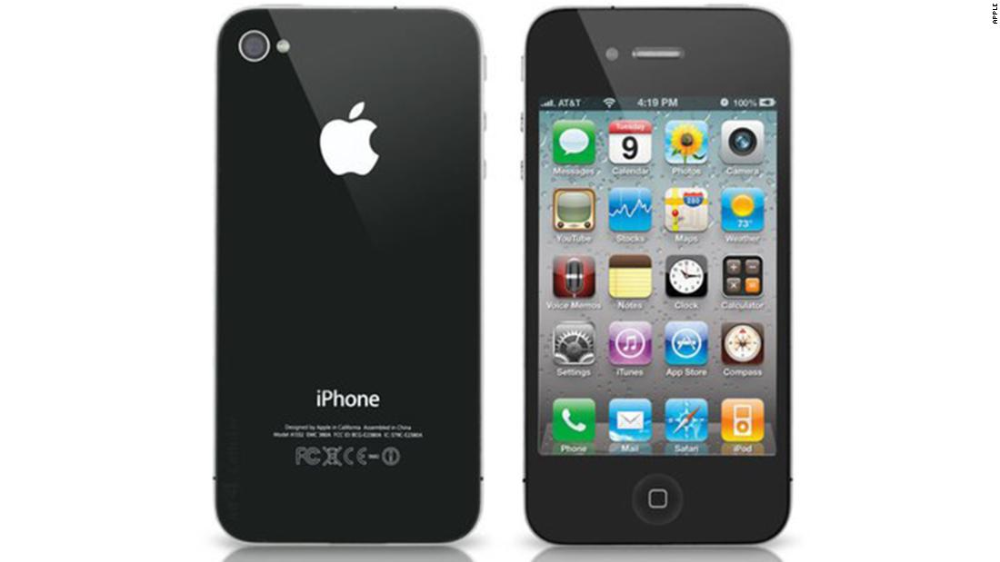

Favoritos

Apple iPad
Apple anunció el iPad en 2010, y desde entonces se ha transformado lentamente en un sustituto de la computadora para muchos (incluidos nosotros). Pero lo que le ha permitido ganarse su lugar en la lista no es la transformación gradual de un dispositivo que muchos críticos consideraron simplemente un iPhone grande cuando llegó al mercado.
- 
IPhone 4
El iPhone 4 de Apple no solo presentaba posiblemente el mejor diseño de iPhone que Apple haya tenido jamás, sino que fue el primer iPhone en contar con una cámara frontal para justificar el lanzamiento de FaceTime, el servicio de video chat de Apple.

Samsung Galaxy Note
En 2011 los teléfonos grandes no estaban de moda; de hecho, se les temía un poco. El Galaxy Note original de Samsung debutó ese año y tenía una pantalla Super AMOLED de 5.3 pulgadas. Fue el primer phablet que conquistó el mercado, y los leales a la línea Note siguen siendo grandes admiradores hasta el día de hoy. Es la razón por la que amamos tanto el Note 10+ y por qué los fanáticos se han mantenido fieles a la marca.

Microsoft Surface
Microsoft siempre ha creado software, pero no fue hasta 2012 que construyó su primera PC, la conocida y querida Surface. Ese año, Microsoft presentó su primera pieza de hardware a principios del verano, pero no envió la primera a las tiendas hasta mediados de otoño. Técnicamente se llamaba Surface RT y ejecutaba Windows RT, pero tenía el mismo espíritu de diseño que Surface Pro 7 y Pro X actuales.

Pebble Smart Watch
El Apple Watch de hoy podría no existir si no hubiera sido por el Pebble. El primer reloj Pebble hizo su debut en 2012 en el sitio web de crowdfunding Kickstarter. La campaña recaudó $10.3 millones, lo que demostró que había una demanda latente para una computadora de muñeca que permitiera a sus usuarios ver e interactuar con las notificaciones de sus teléfonos inteligentes, controlar la música o ver las estadísticas de estado físico.